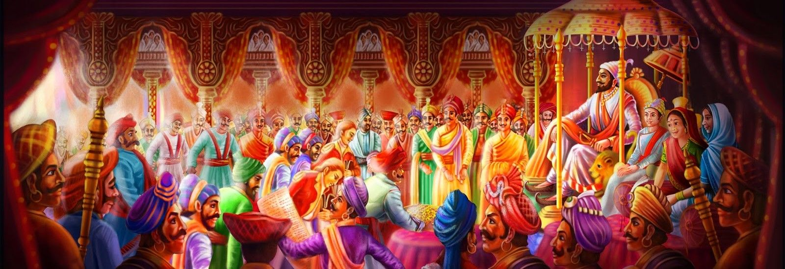

Chhatrapati Shivaji Maharaj
The Noble Leader, The Greatest Warrior King and The Honor of Maharashtra

Chhatrapati Shivaji Maharaj, The Great Maratha Warrior getting crowned as a King. The
day is also known as Shivrajyabhishek Sohala.
Here's a timeline of Chhatrapati Shivaji Maharaj:
- Feb 1630 - Shivaji Maharaj is born in the Shivneri Fort near Junnar in Pune district, Maharashtra
- 1645 - Shivaji Maharaj, at the age of 15, captures Torna Fort, marking the beginning of his military campaigns.
- 1656 - Shivaji Maharaj captures the Raigad Fort from the Adilshahi sultanate, establishing it as his capital.
- 1657 - Shivaji Maharaj came into conflict with the Moghuls for the first time by making raids into Ahmednagar.
- 1659 - In the famous Battle of Pratapgad, Shivaji Maharaj defeats and kills Afzal Khan, a general of the Bijapur Sultanate, solidifying his reputation as a skilled military leader.
- 1659 - To curb down the emerging power of Shivaji Maharaj, the Bijapur Sultan sent an army of 10,000 forces under Rustam Zaman in December 1659 but was defeated at the hands of the Maratha army at the Battle of Kolhapur.
- 1660 - He was attacked by the army of Adilshah's general, Siddi Jauhar, while camping at Panhala Fort, near present-day Kolhapur, in 1660, but Shivaji Maharaj escape to Vishalgad fort. Backed by his Maratha sardar Bajiprabhu Deshpande, who wounded himself while holding back the army at the Battle of Pawan Khind, he reached Vishalgad safely.
- 1663 - The Mughal army captured Pune. When they encamped there, Shivaji Maharaj made a surprise attack killing Mughal soldiers and guards, with Shaista Khan narrowly escaping with a loss of fingers. Soon after in 1664, he raided Surat and looted its treasure.
- 1665 - Aurangzeb sent Rajput Raja Jai Singh to suppress Shivaji Maharaj and succeeded in capturing various Maratha forts, thereby forcing him to surrender and sign the Treaty of Purandar in 1665, ceding 23 forts and 400,000 rupees to the Mughals.
- 1666 - He made a visit to Agra, along with his nine-year old son Sambhaji Maharaj, upon Aurangzeb's invitation in 1666, who put them under house arrest and planned to send him to Kandahar (now in Afghanistan) to handle the Mughal empire's northwestern frontier. But Shivaji Maharaj escaped from Agra along with Sambhaji Maharaj.
- 1670 - Shivaji Maharaj attacked the Mughal forces in Maharashtra and re-captured the forts one by one he had surrendered to them.
- 1670 - In 1670, Shivaji Maharaj launched an expedition under Tanaji Malusare to capture Kondhana fort, which was under Mughal possession. While the fort was seized, Tanaji Malusare died and hence, the fort was renamed Sinhagad.
- 1670 - Shivaji Maharaj raided Surat for a second time in 1670 and defeated the Mughal army under Daud Khan in the Battle of Vani-Dindori (close to present-day Nasik) while returning back
- 1674 - After spending the early 1670s in capturing land and expanding his domain, Shivaji Maharaj crowned himself as the King of the Marathas at Raigad in 1674, earning the title of "Chhatrapati" Shivaji Maharaj.
- 1674 To 1676 - He went on an extensive campaign of raiding more territories in the later half of 1674, capturing Khandesh, followed by Bijapuri Ponda, Karwar, Kolhapur and Janjira in 1675, and Ramnagar,Athani, Belgaum and Vayem Rayim in 1676.
- 1676 - Chhatrapati Shivaji Maharaj then moved southwards at the end of 1676, seizing the forts at Vellore and Gingee (in present-day Tamil Nadu), once ruled by the Adilshahi Dynasty.
- Apr 1680 - Chhatrapati Shivaji Maharaj died in April 1680 at Raigad Fort due to illness.